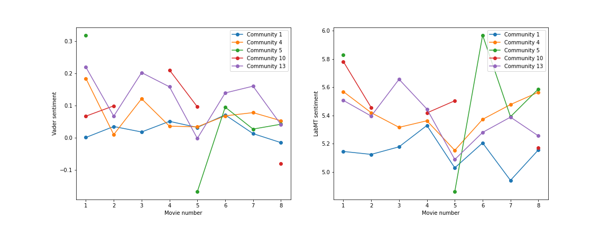

In this section we will group all the characters into communities using the Louvain algorithm. We will do this in order to see if any interesting partitions occur, e.g. Will all the professors end up in a group together? Will the "good" characters be grouped together and the "evil" characters together?
The Louvain algorithm belongs to the class of modularity maximization algorithms for community detection, it tries to optimize the overall modularity of the found partitionning. In terms of its functioning, it works by repeating two steps until the communities found in the last iteration don't have a better modularity than those in the previous iteration. These 2 steps are:
- Step One: Each node in the network is assigned its own community, and the modularity of the graph is calculated. Then, each node is grouped with each of its neighbours to form a new tentative community, and the net change in total modularity is calculated from the resulting graph. Once this has been done for all of a node's neighbours, the tentative community that provided the greatest increase in modularity is chosen and becomes an actual community (that is, the two nodes that were grouped are assigned the same community). The algorithm then procedes to the next node and does the same until all nodes have been processed.
- Step Two: The second step consists in building a new network in which each newly determined community is represented by a single node. The weights of the links between the nodes (former communities) in the new network are given by summing up the weights of the links between nodes in the two former communities. After the creation of the network, step one is done again.
The algorithm ends when there is no more positive gain achieved to the modularity of the network when re-doing step one.
We are using the Louvain algorithm in order to identify our communities. It is worth noting that the Louvain algorithm is nondeterministic and dependent on the order in which the nodes are processed. That is why we have used a random seed, so that we can comment on the results without having to worry about them changing if the notebook is run again.
 In order to have a better insight of the communities, here is the list of most relevant characters in each community number:
In order to have a better insight of the communities, here is the list of most relevant characters in each community number:
1: ['Harry Potter', 'Ronald Weasley', 'Hermione Granger', 'Ginevra Weasley', 'Neville Longbottom', 'Dolores Umbridge', 'Rubeus Hagrid', 'Luna Lovegood']
2: ['Angelina Appleby', 'Filemina Alchin', 'Oona Ballington', 'Concepta Battista', 'Betty Bickering', 'Hugh Biggs', 'Mike Boon', 'Jason Charmer']
3: ['Miles Bletchley', 'Kevin Bletchley', 'Bletchley (musician)']
4: ['Severus Snape', 'Draco Malfoy', 'Sirius Black', 'Remus Lupin', 'Lucius Malfoy', 'Bellatrix Lestrange', 'Alastor Moody', 'Lily J. Potter', 'Peter Pettigrew']
5: ["Jacob's sibling", 'Nymphadora Tonks', 'William Weasley', 'Charles Weasley', 'Merula Snyde', 'Penny Haywood', 'Rolanda Hooch', 'Barnaby Lee']
6: ['Louise', "Louise's admirer"]
7: ['Imogen Stretton', 'Holden Ledbury', 'Jeremy Stretton']
8: ['Cassius Warrington', 'Ivy Warrington', 'Adrian Pucey', 'Daniel Page', 'Colby Frey', 'Cassandra Vole', 'Fischer Frey', 'Kevin Farrell']
9: ['R. J. H. King', 'Jo King (Slytherin)', 'Emma Vanity (Slytherin)', 'Winky Crockett (Slytherin)', 'Andrew Snowy Owl (Slytherin)', 'Stuart Craggy']
10: ['Nicholas de Mimsy-Porpington', 'Myrtle Warren', 'Helena Ravenclaw', 'Bloody Baron', 'Rowena Ravenclaw', 'Fat Friar', 'Robert Hilliard']
11: ['Albert', 'Arthur (Hufflepuff student)', 'Marilyn']
12: ['Mathilda Grimblehawk', 'Sage Bragnam', "Mathilda Grimblehawk's partner", 'Abraham Grimblehawk', 'Albert Bellchant']
13: ['Albus Dumbledore', 'Tom Riddle', 'Minerva McGonagall', 'Horace Slughorn', 'Filius Flitwick', 'Pomona Sprout', 'Amycus Carrow', 'Sybill Trelawney']
14: ['Maynard Hatton', 'Anthony Otterburn', 'Fergus Cowley']
15: ['James Tuckett (II)', 'James Tuckett (I)']
We will now have a look at the results and see if we can conclude anything interesting about these communities. Of course, we can instantly see from the size distribution plot that community 1 is the largest community by far. Furthermore, when we look at the 10 characters with the highest degree of each community, we also se that community 1 contains most of the main characters, including Harry, Ron and Hermione. Looking at the other communities' characters with the highest degrees, we can see some interesting patterns form:
Community 1 - This community is the largest by far as can be seen in the distibution of community sizes. We can also see that this partition contains most of the main characters: Harry, Hermione, Ron, Ginny and Hagrid just to name a few.
Community 2 - This community is made up of former Gryffindor quiddich captains. These characers don't appear in person anywhere, but they appear on plaques in the movies.
Community 3 - This community is made up of three people who all share the same surname, Bletchley. None of them are main characters, one of them is even from the game, however, in their wiki descriptions it says that they might be related, hence why they ended in the same partition.
Community 4 - This is a fairly large community, and it consists mainly of characters from the Slytherin house.
Community 5 - This is another fairly large community, and this community consists of charcters mainly from the Harry Potter video game.
Community 6 - This community consists of just two people: "Louise", and "Louise's admirer". They both appear in the Harry Potter game: Harry Potter and the Half-Blood Prince.
Community 7 - This is another very small commnity, consisting of just three people: Two Slytherin students who blocked an area of the school together, and one character from the game.
Community 8 - This community consists of characters from the game and a few old slytherin quiddich players.
Community 9 - This is another community consisting of old students of quiddich teams who appear on plaques in the movies.
Community 10 - This community contains characters such as Headless Nick, Myrtle Warren and Helena Ravewclaw, who are all ghosts. Indeed, this is a community consisting mainly of ghosts roaming Hogwarts.
Community 11 - Characters from the game: Harry Potter and the Chamber of Secrets.
Community 12 - Characters from the Fantastic Beasts movies, many of whom are part of the British Ministry of Magic.
Community 13 - This is another large community, and many of its members are professors at Hogwarts.
Community 14 - This is a small community, consisting of just three people. These people were members of the Duelling Club in the Training Grounds during the 1996–1997 school year. The members are Maynard Hatton, Fergus Cowley and Anthony Otterburn.
Community 15 - This community has just two people: James Tuckett (I) and James Tuckett (II).
For the 8 most relevant communities we have created the following wordclouds, which help identify and understand how the categorization has been made, and give us insights into the characters in each category.
For the WordClouds based on the wiki descriptions, we decided to only take those communities who had at least 10 members, as to not get anywhere the WordClouds were only based on two or three people. This leaves us with 8 communities to calculate the WordClouds for.
We can see in the WordCloud for community 2 that this community is indeed all about quiddich, as some of the most important words are "quiddich", "appears" and "team", and the fact that "Gryffindor" and "captain" are also very important words shows that it is indeed past Gryffindor quiddich captains.
Communities 1 and 4 have several similarities, with words such as "Voldemort", "death", "family", "battle" and "friend" appearing, with high importance, in both WordClouds. As these two communities are both large and seem to mainly consist of characters from the movies, it makes sense that a lot of the words are similar. However, as we found that community 4 had many members of the Slytherin house, one might have expected the WordCloud for community 4 to be more "evil" than community 1, but that doesn't seem to be the case.
In communities 8 and 9, we can again see that many of their members were involved with quiddich, especially from the Slytherin house, as words such as "quiddich", "slytherin" and "captain" are very large in these WordClouds. The WordCloud for community 10 also shows that this community does indeed consist of ghosts, as words such as "ghost" and "spirit" are very large, and the names of the ghosts also appear often, e.g. "headless", "nick", "helena", "ravenclaw", etc.

Lastly, when doing the sentiment analysis of the communities, we could only perform this on the communities that contained characters who spoke in the movies, hence only communities 1, 4, 5, 10 and 13 could be analyzed. Furthermore, as the characters from communities 5 and 10 don't have many lines in the movies, not a lot can be concluded from them. However, out of the remaining communities, communities 1, 4 and 13, it can be seen that it is community 1 which has the lowest sentiment through the movies. This could be because it is often the main characters who experience suffering and grief in the movies.